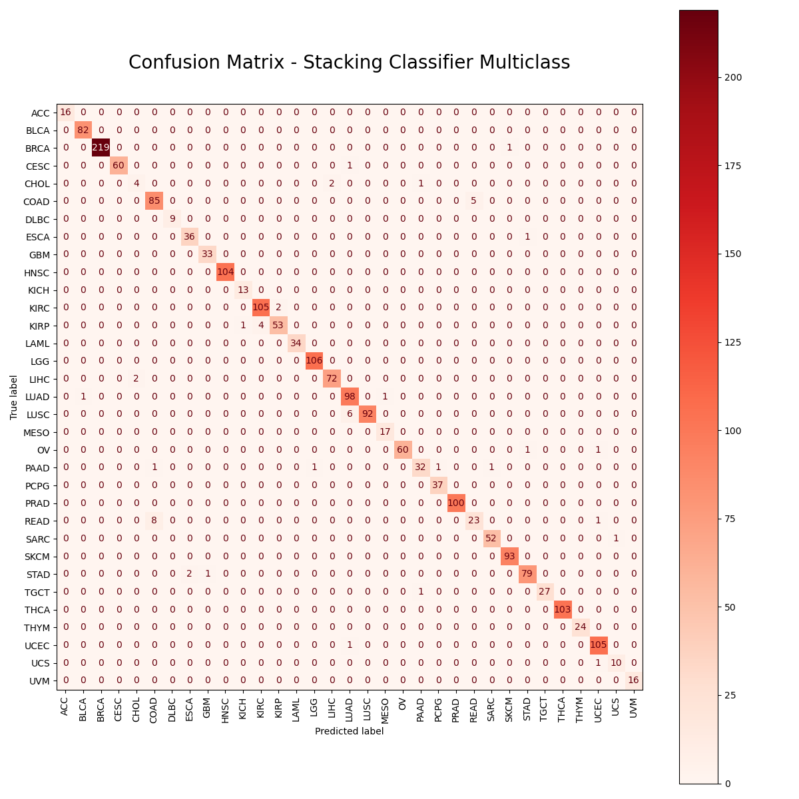

WebDev Class Project (Finish Date - December 2026)
Readme Document: README
Github URL: Musical Right Hand
A Reproducible Cancer ML/AI Prediction Pipeline Trained on TCGA Pan-Cancer RNA-seq Data

Project Report: Report
Github URL: Github Repository
For my CS5100 final project, I built a reproducible machine learning pipeline using the TCGA Pan-Cancer dataset—RNA-sequencing data from over 11,000 patient samples across 33 cancer types. The goal was twofold: first, to classify whether a sample was healthy or cancerous, and second, to predict the exact cancer type. After extensive preprocessing, variance thresholding, and model comparison, I developed stacked classifiers combining logistic regression and XGBoost. The binary (cancer or not) model reached 99.3% accuracy, while the multiclass (cancer type prediction) model achieved 97.6%.
A Reproducible Cancer ML/AI Prediction Pipeline Trained on TCGA Pan-Cancer RNA-seq Data
Project Report: Report
Github URL: Github Repository
For my CS5100 final project, I built a reproducible machine learning pipeline using the TCGA Pan-Cancer dataset—RNA-sequencing data from over 11,000 patient samples across 33 cancer types. The goal was twofold: first, to classify whether a sample was healthy or cancerous, and second, to predict the exact cancer type. After extensive preprocessing, variance thresholding, and model comparison, I developed stacked classifiers combining logistic regression and XGBoost. The binary (cancer or not) model reached 99.3% accuracy, while the multiclass (cancer type prediction) model achieved 97.6%.
Personal Website (I made this website!)
Readme Document: README
Github URL: Musical Right Hand